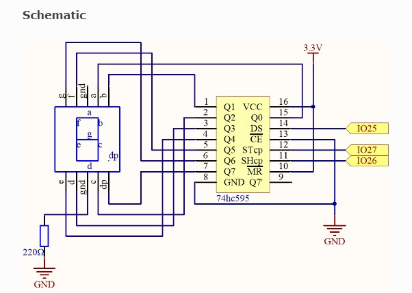
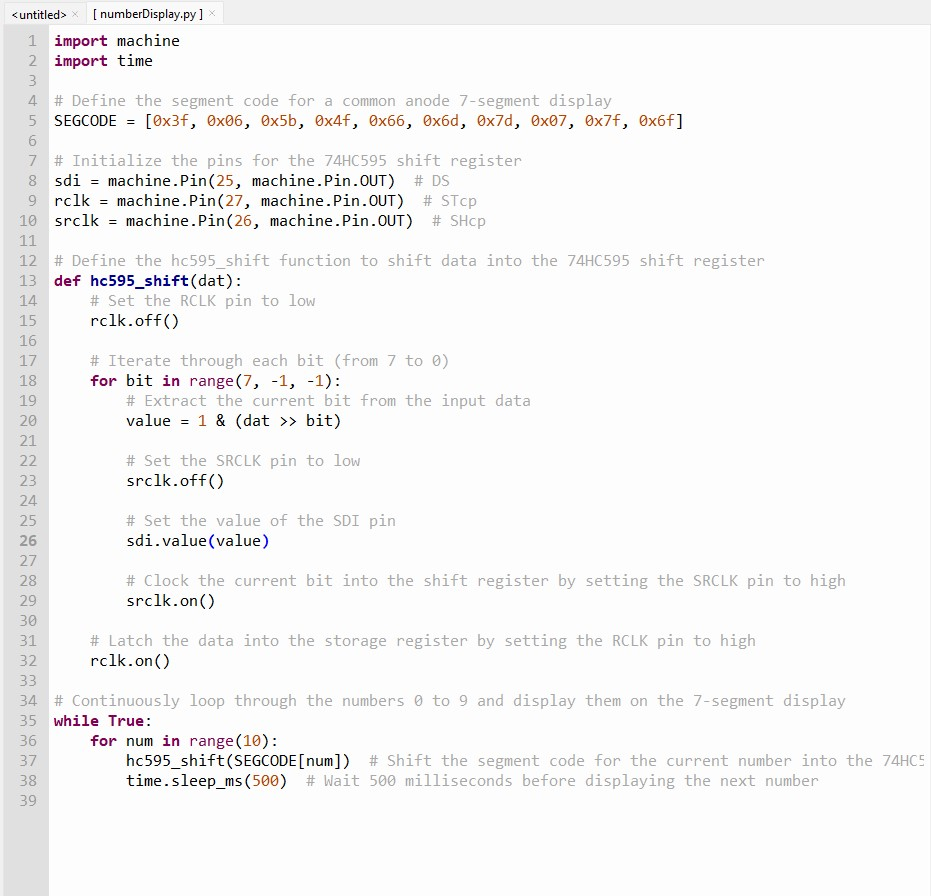

Sept/23/2024 - This is the fourth project, in which I built a circuit that cycles through a 7 segment display, the code is fairly simple, it first defines the segment code for the 7 segment display, then it initializes the pins on the ESP32 . then it defines a function to shift data to the 74HC595 chip, in which a for loop cycles in a range of 7, in decrements of -1.
  Volver a la página principal